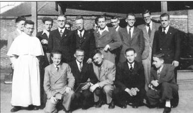

> nieuwsbrief > 2018 - nr 1
Inhoud
Hernieuwen
ledenbijdrage voor 2018
De jaarwisseling nadert
met rasse schreden – en meteen ook het tijdstip voor het
hernieuwen van de bijdragen voor 2018. Dank zij een zuinig
beheer blijft het ons mogelijk om, niettegenstaande alweer
gestegen druk- en portkosten, de minimumbijdrage te behouden
op 29 €. In ruil daarvoor verzekeren we u andermaal de stipte
toezending van het nieuwe Jaarboek Joris van
Severen – het 22e al – in de meimaand en van de vier
nummers van ons kwartaalblad Nieuwsbrief Joris van
Severen. Vanaf het bedrag van 35 € boeken we u met dank
als steunend lid. Vereffening graag via onze rekening IBAN:
BE71 0001 7058 1469 – BIC: BPOTBEB1 t.n.v. Studiecentrum Joris
van Severen, Paddevijverstraat 2, 8900 Ieper.
Grafconcessie Louis
Gueuning
De oproep om bij te
dragen tot de verlenging van de grafconcessie werd mild
beantwoordt. Mede in naam van de Stichting Louis Gueuning
en de familie Gueuning dank aan iedereen die daartoe bijdroeg.
De vrijwaring van het graf te Mainvault is daardoor voor de
eerstkomende 30 jaar verzekerd.
Maurits Cailliau
In De
Standaard verscheen recent, gespreid over 3 pagina’s en
opgesierd met het stilaan obligaat geworden hakenkruis bij
‘items’ van dat soort, een interview met de historicus Koen
Aerts, over z’n recente publicatie met de titel Was opa een nazi?1
Marc Reynebeau en Bart Brinckman
waren de interviewers; de
lezers waren dus gewaarschuwd omtrent de te verwachten teneur van
hun vragen en de historische relevantie van dien. Het zal wel
eerstgenoemde zijn – de tweede is immers niet direct een
onderlegde op het vlak van de geschiedenis – die het niet
laten kon om er ook Joris van Severen bij de sleuren, middels
volgende ‘opmerking’:
“Cyriel Verschaeve] die een nazi en een
veroordeelde collaborateur was. Maar er is ook een straat
genoemd naar Joris van Severen, al kon die in de oorlog niet
fout zijn omdat hij al bij het uitbreken ervan werd
vermoord.”
Waarop Aerts repliceerde
“Dat is heel moeilijk. Maar Van Severen was wel een
fascist en een antisemiet. Ik vind tussenoplossingen wel
nuttig, zoals het plaatsen van een bordje met historische
duiding. (…)”
Is dat wel zo? Was Joris van Severen een fascist en
een antisemiet? Eerder hebben we deze thema’s meer uitgebreid
behandeld en toegelicht.2 In beide gevallen kwamen
we tot de vaststelling dat enige nuance hieromtrent geboden
is, en wel omdat:
1. Joris van Severen zichzelf
nooit als een fascist geaffirmeerd heeft, en
2. het gehalte van het
antisemitisme binnen zijn beweging kaderde binnen de
toenmalige ‘mores’ die hieromtrent binnen de katholieke
leefwereld heersten.
Het blijft voor historici van de jongste generaties
klaarblijkelijk een te hoog gegrepen vereiste om, inzonderheid
voor wat de jaren van het interbellum betreft, tot een
objectief en afgewogen oordeel te komen, m.a.w. dat tijdvak te
kaderen binnen de tijd van toen.
Slechts zelden komen we in hun publicaties inzichten
tegen als deze in de recente studie van Willem Huberts:
“Het fascisme kreeg in de tweede helft van de jaren
twintig een positief imago, omdat het een mogelijke uitweg
bood uit een verstard politiek systeem, als een derde weg, een
alternatief dat noch liberaal noch socialistisch was.”3
Die “derde weg” bewandelde onmiskenbaar ook Joris
van Severen met zijn beweging. Indien men een amalgaam maakt
van alle vernieuwingsbewegingen uit de jaren dertig van vorige
eeuw – en hun soms diepgaande verschillen veronachtzaamd – om
ze binnen het containerbegrip “fascisme” onder te brengen, ja,
dan krijgen de “terrible simplificateurs” uiteraard hun zin –
en was Joris van Severen een fascist. Maar om tot dit besluit
te komen – dat ook het besluit van Reynebeau6 is –
moet je wel steeds en overal je gezichtsveld vernauwende
paardenbril ophouden.
Huberts haalt, naast vele andere, ook het getuigenis
aan van W.M. Westerman, die voor het Verbond voor Nationaal
Herstel – een kleine loot uit de Nederlandse
fascistencontainer – in 1933 in de Tweede Kamer zetelde en op
de vraag of hij fascist was antwoordde:
“Ja, ik ben fascist in zuiver Nederlandse zin, dat
wil zeggen: ik pleit voor een zo sterk mogelijk staatsgezag,
voor een terugbrengen van deskundigheid waar deskundigheid
behoort te zijn, en voor het aankweken van gemeenschapszin.
Als men dat fascisme noemt, dan ben ik een fascist.”4
Wanneer pleidooien als deze als toetssteen dienen te
fungeren teneinde uit te maken of en waarom iemand in het
fascistische kamp thuishoort, dan is het einde uiteraard wel
zoek.
“Belangrijk is te noteren dat voor vrijwel alle
fascistische partijen en bewegingen het belang van het
individu het moest afleggen tegen het grotere belang van de
staat.”5 – noteert Huberts in zijn besluitvorming.
De toetssteen die Joris van Severen gebruikte
teneinde zijn beweging en haar doelstellingen af te bakenen
ten overstaan van de andere epochemachende
bewegingen die in de jaren van het interbellum aantraden,
formuleerde hij niet mis te verstaan in volgende bewoordingen:
Fascisme:
primauté de l’etat.
Hitlerisme:
primauté de la race.
Dinaso: voorrang der persoonlijkheid
op hare plaats in de organisch geordende volkgemeenschap.
Ze beklemtonen méér dan welk betoog ook waarvoor hij
stond en bakenen de kloof af tussen zijn betrachtingen en deze
van het fascisme en/of nationaalsocialisme. Alle Reynebeau’s
ten spijt!6
____________
Noten
1 De Standaard,
16-17 september 2017, pp. 26-28.
2 In Fascisme und kein Ende?,
in het Jaarboek Joris
van Severen 20 (2016) voor wat het fascisme
betreft, en in onze brochure Het Verdinaso,
Antisemitisme und kein Ende?, (2009), voor wat het
antisemitisme aangaat.
3
Willem Huberts, In de ban van een beter
verleden. Het Nederlands fascisme 1923-1945, Van Tilt,
Nijmegen, 2017, p. 65.
4
Willem Huberts, a.w., p. 185. W.M.
Westerman (1892-1950) was o.m. de auteur van De Crisis van het Gezag.
Een onderzoek naar de oorzaken van het gemis aan
bestuurskracht in de parlementaire democratie, H.P.
Leopolds Uitgever Maatschappij, 1928. Een essay dat voorwaar
nog lessen voor het heden bevat.
5
Willem Huberts, a.w., p. 222.
6
Dezelfde Reynebeau die het presteerde om in De Standaard – ook
dezelfde - van 25 oktober 2014, bij z’n bijdrage kaderend in
de hetze rond ons Joris van Severen-colloquium, een foto af te
drukken van de linkse USAF-militie, die hij als een foto van
de Dietse Militantenorde betitelde. Betreffende foto ook in
ons Jaarboek Joris van
Severen 20, 2016, p. 35. Over Reynebeau als historicus
leze men met vrucht het essay van z’n betreurde vakgenoot Eric
Defoort: Het klauwen
van de historicus, Antwerpen, 1996, waaruit o.m. blijkt
dat Reynebeau’s werk méér zegt over diens politieke agenda dan
over de onderwerpen die hij aansnijdt - zoals overigens ook
een Bruno de Wever vaststelde ten overstaan van de teneur van
Reynebeau’s werk (bij zijn recensie van Defoorts pennen-vrucht
(in De Nieuwe
Gemeenschap, nr.4/1996, p.20 van het Vermeylenfonds).
Over het Verbond van Dietse Nationaal Solidaristen
“(…) Katholiek-liberale
regeringen proberen in de jaren 1930-1935 het hoofd te bieden
aan de economische neergang terwijl de parlementaire
democratie steeds meer aan draagvlak verliest. De notie van
‘structuurhervorming’ wordt populairder door de malaise van de
economische crisis en de buitenlandse antidemocratische
evoluties.
“(…)
Begin mei 1941 werd de
Eenheidsbeweging VNV een feit. Rex Vlaanderen en het Verdinaso
werden opgeslokt. De militie van het Verdinaso (Dinaso
Militanten Orde) zou samengaan met de Zwarte Brigade onder
leiding van Reimond Tollenaere. Toch had het VNV geen politiek
monopolie. Er was nog concurrentie van de Algemene SS
Vlaanderen. Doordat deze Algemene SS Vlaanderen niet opgenomen
kon worden en doordat er afscheuringen waren van onder-meer
oud-Dinaso’s, kan de Eenheidsbeweging een mislukking genoemd
worden. (…)” (p. 40)
“(…)
“De politiek van het Verdinaso
was niet die van het VNV en feitelijk waren ze ook geen
gelijkwaardige partners. Een aantal ontgoochelde Dinaso’s
verliet het VNV en probeerde nog zelfstandig een eigen
beweging te organiseren, maar ze mislukten daarin.(…)” (pp.
42-43)
________________
Bron: Suzanne Lambert, Kinderen van de
collaboratie. Ervaringen en getuigenissen van nakomelingen
van collaborateurs in de Tweede Wereldoorlog. Master in
de geschiedenis, academiejaar 2009-2010. Promotor: Prof. dr.
Bruno de Wever, Vakgroep Geschiedenis.
Studentenvereniging 'De Gemeenschap'
Antoon van Mierlo en
Bert Hendrickx
In het ‘Jaarboek Joris van Severen 15’ (pp.
141-176) brachten we, onder de titel ‘Van het Jong-Dinaso
tot De Gemeenschap’, een vraaggesprek met Godfried Kerkhof,
met aansluitend de tekst ‘De Gemeenschap, ontwerp van
Keure’. In onderstaande bijdrage, ontleend aan de
‘Nieuwsbrief Taxandria’, nr. 3, 2017,
(pp. 21 – 23), wordt
andermaal aandacht besteed aan ‘De Gemeenschap’ die
voornamelijk in het Turnhoutse actief blijkt geweest te
zijn. Uit noot 12 van onze jaarboekbijdrage bleek dat Paul
Janssens, Jef Beyens, Jef Bleuckx en Jan Hendrickx
(voorkomend op de foto hieronder) effectief lid waren van
het Verdinaso, respectievelijk het Jong-Dinaso. Deze
Taxandria-bijdrage brengt aanvullende gegevens aan over dit
veelal onder de radar gebleven initiatief in de geest van
het Verdinaso tijdens de jaren van de Tweede Wereldoorlog.
Maurits Cailliau

Bovenaan links naar rechts: Paul Janssen, Pater
Bonifaas O. Praem (Jef Luykx), Paul Schuermans, Jef Beyens,
Achiel Leys, Nick van Beek, Karel Swannet, Johan van den
Brandt, Jef Bleuckx en Antoon van Mierlo, Onderste rij: Jos
van Beek, Jan Hendrickx, Frans van Mechelen,
Jef Verbruggen en Rik Cos
Bij een bezoek aan Antoon van Mierlo op 3 maart 2017
toonde hij een opmerkelijke groepsfoto van een amper tot niet
gekende Turnhoutse studentenvereniging. Antoon van Mierlo
(°1923), samen met Jan Hendrickx (°1921) sprokkelden alle nog
overgebleven herinneringen aan en documenten van deze
vereniging en bespraken dit in 2006 met Piet Tommissen die
alle gegevens in een knap artikel goot.1 Pas later
werd bovenstaande foto door Van Mierlo teruggevonden en vormt
zo een mooie aanvulling op de reeds bestaande tekst.
De Duitse overheid had tijdens de Tweede
Wereldoorlog alle jeugdbewegingen verboden. Maar tijdens de
twee laatste jaren van de oorlog kwam toch een groep studenten
van het laatste jaar middelbaar en/of eerste jaar universiteit
regelmatig bijeen in de stadsschool in de Koning Albertstraat
in Turnhout, waar toen de ouders van Jef Beyens - één van de
groep - conciërge waren.
Initiatiefnemer van deze studentenverenging was
pater Bonifaas O. Praem. Geboren als Jef Luykx in Lommel in
1915, deed hij zijn middelbare studies in het
Sint-Jozefcollege in Turnhout en beëindigde er zijn studies in
1933 als primus
perpetuus. Een jaar later was hij zeer actief in het
Algemeen Katholiek Vlaams Studentenverbond en de Lommelse Blauwvoet. Via gouw-
en landdagen kwam hij in contact met de katholieke jeugdleider
Ernest van der Hallen, die hij later nog vele keren ontmoette.
In 1934 trad Jef Luykx in bij de paters Norbertijnen in
Postel. Van de novicemeester Sprenger mocht hij in de abdij
vergaderingen van de studentenbond blijven organiseren. Nadat
Jef in 1940 tot priester werd gewijd, ging hij als pater
Bonifaas theologie studeren aan de universiteit van Leuven,
waar hij in 1946 doctoreerde. In deze jaren kwam hij
regelmatig naar Turnhout om geestelijke leiding te geven aan
een groep gelijkgezinde studenten die elkaar steunden in een
radicaal evangelisch leven, genaamd De Gemeenschap. De
jonge Turnhoutenaren werden voorzeker in de richting van de
Blauwvoeterij gestuwd, met zelfs enkele Verdinaso-invloeden,
maar wel zonder aangetrokken te worden door het VNV of de
Hitlerjugend.
In een Ontwerp
van Keure schreef pater Bonifaas dat De Gemeenschap (soms
gemakshalve Groep G
genoemd) een aantal sterk aangesloten verbanden of
levensgemeenschappen ging omvatten, overkoepeld door een Dietse Orde met als
basis: de idee van ons
jong zijn, de Dietse idee en de katholieke idee. In een
andere tekst werd zelfs gesproken van het vormen van een nieuw menstype: 'de
Dietser’.
Deze studentengroep mocht zeker geen jeugdbeweging,
noch politieke groepering, noch een Katholieke Actiegroep
zijn. De Gemeenschap
moest wel een
christelijk-evangelische, katholieke-aristocratische,
volks-staatse en nationaal-solidaristische opvatting
verspreiden.
Aan het hoofd van elke levensgemeenschap kwam een
gemeen-schapsleider die verantwoording moest afleggen aan een
kanselier, het hoofd
van de verschillende gemeenschappen. De eerste studenten die
de Keure volgden,
kwamen uit Turnhout, met Jef Beyens als hun
gemeenschapsleider. Het is vrij logisch dat de meeste jongeren
in het Sint-Victorinstituut, het Sint-Jozefcollege en het
Koninklijk Atheneum hadden gestudeerd of er nog studeerden.
Een ledenlijst toont nog meer namen dan diegenen die op
bovenstaande foto staan. Ook Staf Avonds, Jan Goemans, Staf
Hofkens, Frans Lauwerijs, Hyppoliet Leys en Staf Verbruggen
waren aangesloten.
Naast een Kempische leefgemeenschap moeten er ook
(minstens) een Antwerpse en Leuvense gemeenschap actief
geweest zijn.
De leden van de Kempische groep kwamen regelmatig
samen in de abdij van Postel, bij de ouders van pater Bonifaas
in Lommel, in de lagere school aan de Koning Albertstraat en
in het herenhuis van Antonia Buckinx-Luykx op de hoek van de
Grote Markt en de Herentalsstraat. Een bezinningsweek werd
georganiseerd in een lesvrije zomerperiode, van 19 tot en met
26 augustus 1944 in een leegstaand gebouwtje binnen de muren
van de abdij van Postel, door de aanwezige studenten het Stierenkot genoemd...
Omdat na de bevrijding de Staatsveiligheid even
dacht dat Groep G
voor Geheim stond en een onderzoek wilde instellen, doken
enkele leden waaronder Antoon van Mierlo en Frans van Mechelen
een weekje onder, terwijl Jef Beyens en Jan Hendrickx vele
verslagen en andere papieren vernietigden. Jef Beyens werd wel
enkele weken in de Antwerpse Begijnenstraat gevangen gezet en
dat zonder echte aanklacht en ondanks het feit dat de
apolitieke groep De
Gemeenschap nooit echt van collaboratie verdacht werd.
Eind 1945 verdween De Gemeenschap snel en geruisloos. De onderlinge
contacten verslapten wat. De meesten studeerden af, vervulden
hun dienstplicht, huwden, … Meerdere leden van De Gemeenschap kenden
later een mooie carrière. Frans van Mechelen (1923-2000) was
o.a. professor, minister en voorzitter van de Bond van Grote
en Jonge Gezinnen. Paul Janssen (1926-2003) werd dokter en
stichter van Janssen Pharmaceutica, Jan Hendrickx was
kabinetschef en ambassadeur.
___________
Noot:
1 Piet Tommissen, ‘De Gemeenschap. Een initiatief van
pater Bonifacius Luykx (Proeve tot reconstructie)’, in: Het Verbond. Grensverleggend
tijdschrift voor Vlaams-Nederlandse samenwerking, nr.4
(2006), p. 3-21. De tekst verscheen ook in: Piet Tommissen, Nieuwe buitenissigheden,
La Hulpe, 2007, p. 141-168.
André Belmans is op de leeftijd van 93 jaar
heengegaan. Dat was op 22 juni 2008. De bescheidenheid die
deze man kenmerkte en ook de vakantieperiode zijn er allicht
de oorzaak van dat de belangstelling, zijn uitgebreide familie
uitgezonderd, aan de magere kant was. Bovendien was Belmans
een overtuigd katholiek en Vlaming en Verdinaso.
Een aanhanger van Joris van Severen uit de Kempen,
meer bepaald Balen. Hij werd nochtans notaris in Anderlecht,
reeds vanaf 1960. Het fatalisme van het modernisme levert ter
nagedachtenis van één der onzen bij de media uiteraard
zero-belangstelling op. Ook in 't Scheldt is dit een te laat In Memoriam.
In 1940 had Belmans snel door dat de Duitse bezetter
Vlaanderen ten eigen profijte wilde gebruiken en niet anders.
Menig Verdinaso heeft hij afgeraden naar het Oostfront te
gaan, hoewel ook hij tegen het goddeloos communisme gekant
was. Toch hielp hij vrienden hetgeen hem later in contact
bracht met de repressie. Hij zou Verdínaso-mensen geholpen
hebben tijdens de oorlog. Gelukkig liepen er nog auditeurs
rond met enig gezond verstand. Hij werd nooit vervolgd.
Vergis u niet in Belmans: hij was een energiek man
en een denker. De Vlaams-nationalisten verweet hij vele malen
geen staatsvisie te hebben. Dat Van Severen ook als eerste een
bocht van veel graden maakte wou hij niet geweten hebben.
Vlaamse verdeeldheid, gevolg van de partijpolitieke
opdeling, deed hem dikwijls naar de pen grijpen. Zijn ideaal
waren de Lage Landen, de Benelux waaraan hij een politieke
dimensie wilde geven die blijkbaar slechts een minderheid in
Vlaanderen én in Nederland genegen waren. Bij die minderheid
was Renaat van Elslande, die echter niet doorzette en Joseph
Luns in Nederland, die wél doorzette, maar de politiek
correcten, vooral aan de linkse kant, tegen kreeg.
Belmans was, men kan die indruk krijgen, niet zo
maar een kamergeleerde. Tijdens de IJzerbedevaart 1948 zorgde
hij met kompanen voor dat pamfletten van de Paxpoort
dwarrelden. Daarop in schreeuwende letters: “Van Severen had
gelijk'.
Een nog beter voorbeeld van zijn inzet was het
terreinwerk dat hij leverde om tot een verzameling van
Kempense intellectuelen te komen, waardoor De ‘Stichting voor
de Kempen' werd opgericht. Die belangstelling voor de Kempen,
vooral op economisch gebied, leidde tot industrialisering,
banen voor de afgelegen Zuiderkempen. Zijn kontakten met Jos
van Orshoven, medewerker van Gaston Eyskens, hielpen daarbij.
Belmans en de Vlaams-nationalisten, ze konden niet
door één deur. Heeft het zin die verdeeldheid in Vlaanderen
voor de zoveelste keer te onderstrepen, nu Belmans, met zijn
vele verdiensten na een lang en arbeidzaam leven, ook voor
Vlaanderen van ons is heengegaan?
Neen dit heeft geen zin, tenzij deze oproep:
Vlaanderen, breek uit uzelf, er is meer dan dat. Er is Europa.
Vlaanderen, staat in Europa, zou daarbij kunnen helpen.
Dat laatste was voor Belmans echter de verkeerde
stap, want hij verkoos - schrik niet - het provinciaal
federalisme.
Laat het zijn wat het wil. Een Vlaamse strijder is
heengegaan. Ook zullen velen, omwille van dit provinciaal
federalisme, hem een Belgicist noemen.
_________________
Bron: http://www.tscheldt.be/eula_sch/eula_index.php?opt=LVE&ord=DESC&lim=50&art=571&rub=0&con=29&vv=yes
Geschaard rond het graf van Louis Gueuning
Hieronder volgt de (ingekorte) tekst van de
toespraak die op 4 november 2017 te Mainvault aan het graf
van Louis Gueuning († 11 november 1971), gehouden werd door
de Heer J. Peeters, permanent secretaris van de Louis
Gueuning Stichting.
Ad Honorem Louis
Gueuning, defensor Civitatis et Ordinise
en tezelfdertijd als herinnering aan Joris van
Severen, Pater patriae
van het Gemenebest der aloude geopolitieke Nederlanden,
verenigd in de XVll Provinciën van keizer Karel V.
Rond deze graftombe herinneren wij aan de Europese
roeping van het “Commonwealth” der “Low Coutries”, dit is het
gebied van de delta van Rijn, Maas en Schelde.
Louis Gueuning, werd tot doctor in Wijsbegeerte en
Letteren, zoals dat destijds genoemd werd, gevormd aan de Alma
Mater door decaan Kanunnik Remy. Kort voor het uitbreken van
de Tweede Wereldoorlog nam hij de beslissing om Joris van
Severen te vervoegen in zijn strijd. Daartoe schrijft hij hem
een “Open brief”1, waarin hij, voor wie tussen de
lijnen leest, de voorwaarden opsomt om tot een politieke
hernieuwing te komen: d.w.z. het einde van de particratie en,
met een ongebreidelde hubris – “sicut dei eritis”! –
te pogen de “Staat van een natie zonder staat” te zijn. Een
schijnbaar onmogelijke, doch noodzakelijke taak.2
Daartoe dient een elite, een keurkorps gevormd,
zowel op doctrinair, als op organisatorisch, strategisch en
tactisch vlak. Dit alles ten dienste van het Algemeen Welzijn
van de Benelux-landen, smeltkroes van Europa en onze Westerse
beschaving. Bij dit alles het woord van Willem de Zwijger,
prins van Oranje, indachtig: “Point n’est besoin
d’espérer pour entreprendre, ni de réussir pour perséverer.”
Dit was zo in 1939, aan de vooravond van WO.II, dit
is ook nu de harde realiteit te midden van de folkloristisch
aandoende chaos - ingevolge de ideologie van het “globalisme”,
de “Toren van Babel” – die onze wereld op haar grondvesten
doet daveren.
Dit zijn nu eenmaal de onvermijdelijke gevolgen,
logischerwijze, wanneer men een beschaving en een
staatsgemeenschap wilt bouwen op het moeras van de
‘Verlichting’. De gevolgen? Twee (Europese!) wereldoorlogen,
twee zogenaamde “Revoluties”. Eerst de Franse Revolutie
(1789), en haar ‘paard van Troje’ dat Liberalisme heet. Dan de
Russische Revolutie (1917), vrucht van het marxisme, dat op
zijn beurt het fascisme zal baren. Ontaardend in het
Leninistisch-Stalinistisch Totalitarisme.3
Desondanks, “ce
sont les Idées qui mènent le monde”, en staande hier
voor deze graftombe, formuleren wij drie waarheden, zoals ze
ons werden voorgehouden door Joris van Severen en zijn
“woordvoerder” Louis Gueuning:
1.
De Particratie, die een aanfluiting is van de echte
democratie, ik onderstreep: het partijen-“systeem” dat
het Parlement heeft “opgeslokt”, moet verdwijnen en wijken
voor een échte volksvertegenwoordiging (met controle op
financies en subsidies) die in ere dient hersteld. Anders
gezegd: “het volk oefent de macht uit in zijn Parlementen (of
“Staten”).
2.
Aan het hoofd van de Staat – die de handhaver is van
de orde en die garant staat voor onze vrijheden – staat het
Staatshoofd of de Prins, d.w.z. dat het gezag opnieuw moet
heersen en regeren: “De prins in zijn Raden”, volgens de
gekende formulering. Aldus zal het evenwicht hersteld worden
tussen Parlement en Regering.
3. Pas dan zullen en kunnen de Nederlanden, zoals al
gezegd: de smelt-roes van Europa, hun Zending van Synthese
en van Federatie, opnieuw vervullen. En dus een politiek
voeren die Europa – in tegenstelling tot de huidige
mercantilistische Europese (verdeelde) Unie, die naar het
separatisme en de vernietiging van elke soevereiniteit leidt -
een nieuwe vorm en inhoud geeft. Onder meer met en dank zij
het huidige Rusland, dat ook een Europese mogendheid is, die
deel uitmaakt van Eurasia.4
Zowel op binnenlands- als op buitenlands vlak is het
dringend nodig een einde te stellen aan de kanker van de
heersende wanorde:
Eén is het doel,
Eén is de weg.
Eén is de leider.
Zoals het destijds, in de sfeer van die tijd, klonk.
En dit alles onder de hoede van Sint-Michiel, die
troont op het Brusselse stadhuis.
Noten
1 Op 20 april 1939. Zie Jaarboek Joris van
Severen, 21, pag. 199: Pourquoi j’ai adhéré au
Verdinaso.
2 Hieraan gingen contacten vooraf met Pierre baron
Nothomb, senator, ex-medewerker aan het oorlogskabinet dat
onder leiding stond van Charles graaf de Brocqueville tijdens
WO.1. Alsmede van een studie over Joris van Severen en het
Verdinaso, in een Brussels maandblad (15 juni 1937) door de
jonge advocaat Pierre d’Ydewalle, toekomstig kabinetschef van
Eerste Minister Hubert Pierlot.
3
Courtois, Stéphane,
Lenine, l’inventeur du Totalitarisme, Parijs, Perrin,
2017. De auteur is
een ex-Trotskist, historicus en schrijver van o.m. Le livre noir du
Communisme, 1997. Hierin herinnert hij dat Lenin, een jaar voor zijn
overlijden, Stalin benoemd heeft tot Secretaris-generaal van
de communistische partij in de Sowjet-Unie (1922). Zie
ook de monumentale trilogie Une histoire mondiale du
communisme van de Franse historicus Pierre Wolton (3
delen: Les bourreaux,
Les victimes, Les complices, Parijs, Grasset, 2017.
4
Stone, Oliver, Conversations
avec Poutine, Parijs, Albin Michel, 2017. De Amerikaanse cineast Stone heeft van zijn opnames
een film gemaakt en tevens een boek geschreven i.v.m.
gesprekken met Poetin (het laatste gesprek had plaats tijdens
de verkiezingscampagne van President D. Trump (2016).
'Onze beste fascistische schilder'
Marcel Hulspas
‘Kijk dat is dat
schilderij met die band. Daarvan zeggen ze dat…’ - ‘O, dat
geleuter interesseert me niet. Dat filmpje daar, daar kijk ik
ook niet naar. Ik let alleen op de kwaliteit van zijn werk!’
Ze stonden naast
me. Twee dametjes. We keken naar Zelfportret
met Zwarte Band,
van Pyke Koch. Zijn meest duidelijke eerbetoon aan het
fascisme. Ze vonden het mooi geschilderd. En dat was dat.
In 1927 liet de
Utrechtse rechtenstudent Pyke Koch zijn studie voor gezien, en
ontwikkelde zich daarna in hoog tempo tot een van de meest
getalenteerde schilders van Nederland. Hij kwam in contact met
stadsgenoot schilder, enfant terrible en een van de eerste
Nederlandse fascisten Erich Wichmann, en trouwde met de dochter van
politicus Willem de Geer. Zo kreeg hij toegang tot de betere
kringen.
Precies wat hij
zocht. Tijdgenoten vermelden dat Koch als eenvoudige startende
kunstenaar al niets moest hebben van het gewone volk. De elite
moest het volk leiden. Vrijheid was een mooi ideaal, zei hij
later in een interview, maar het had vooral chaos gebracht.
Hij kwam graag in Italië.
En hij wilde zijn
idealen omzetten in daden. De NSB was hem te proletarisch.
Koch verbond zich met het kleine, fellere Verdinaso (het ‘Verbond van Dietsch Nationaal
Socialisten’) dat wat hem betreft beter aansloot bij zijn
artistiek-elitaire ideeën. En in 1937 schilderde hij
zichzelf met om het hoofd die zwarte band. Een schitterend
schilderijtje, dat zijn vakmanschap én zijn overtuiging nog
eens onderstreepte.
De grote uitdaging
kwam na mei 1940, toen Verdinaso gedwongen werd te fuseren met
de NSB. Koch, die in dezelfde tijd een prachtig portret van
zijn vrouw exposeerde (zijn tweede meesterwerk), werd door de
dikke koppen van de NSB niet voor vol aangezien en belachelijk
gemaakt in het NSB-cultuurblaadje De
Wagen. Er volgden meer ruzies. Proleten waren
het, allemaal.
De rest van de
oorlog trok hij zich terug in zijn appartement aan de Oude
Gracht, waar hij zich stortte op zijn werk. Hij schilder zo
mogelijk nóg gedetailleerder dan voorheen. Hoeveel mensen de
overzichtstentoonstelling ook bezoeken, zijn Stilleven
met vogelkooi
blijft adembenemend stil.
Waarom die zwarte
band? Vroegen een aantal naïeve studenten vele jaren later.
Oh, dat was mooi voor de compositie, zei hij. Hij schijnt ook
wel eens gezegd te hebben dat atleten ‘toen’ dergelijke banden
droegen.
Allemaal
mooipraterij. Pyke Koch was een echte fascist – maar dan van
de soort die al in de eerste oorlogsjaren roemloos ten onder
ging. Het romantische soort, dat heilig gelooft in de
nabijheid van de Ondergang van het Westen (Koch verslond
Spenglers Untergang des Abendlandes)
en in de unieke rol en de louterende werking van de elite. Als
die de macht maar kreeg! Dan kwam alles goed!
Het zijn
sentimenten die anno 2017 weer opklinken, vaak begeleid door
een mopje Schubert. Maar in de tijd van Koch werden die door
de nazi’s snel vermalen. De vele jaren gezaaide minachting
voor de democratie had inmiddels zijn eigen monsters gebaard.
Die twee dametjes
hebben natuurlijk gelijk. Je kunt Pyke Koch bewonderen zonder
iets te (willen) weten van zijn politieke ideeën. Maar daaraan
ten grondslag lagen die malle idealen van een elitaire
renaissance, en die heeft hem nooit losgelaten. Na de oorlog
kwam Koch zijn atelier nog maar zelden uit, maar ook tussen
die muren (alsmaar schilderend) bleef hij dromen van een
artistieke Renaissance. Oude thema’s bleven terugkeren
(ironie, surrealisme, het circus) maar hij zocht zijn
inspiratie niet voor niets in de eerste en enige Renaissance.
Met name bij Pietro Della Francesca.
Wat hem in diens
werk fascineerde was Della Francesca’s ‘surrealisme’. Het feit
dat deze schilder de meest dramatisch gebeurtenissen
combineerde met personages die daar schijnbaar volkomen
onaangedaan, achteloos bij stonden. Alsof ze ondertussen aan
iets heel anders dachten, door iets heel anders bezeten werden
terwijl vlakbij op gruwelijke wijze geschiedenis werd
geschreven. Die tegenstelling, die kwam hem waarschijnlijk
heel bekend voor.
Pyke Koch. Een
groots en intelligent schilder. Meegezogen in de verleiding
van het oppervlakkige antidemocratische denken.
De
tentoonstelling ‘De wereld van
Pyke Koch’ is nog tot 18 maart
2018 te zien in het Centraal Museum in Utrecht.
_________________
Bron:
http://sargasso.nl/hulspas-weet-beste-fascistische-schilder/
PS: In het Jaarboek Joris van
Severen 22 (2017) wijdt Pieter Jan Verstraete een
biografisch opstel aan deze kunstenaar.
In deze rubriek verwijzen we zonder veel
commentaar naar recente publicaties waarin Joris van Severen
en/of het Verdinaso vermeld worden. We citeren de meest
treffende passussen woordelijk zonder daarin volledigheid na
te streven. We verzoeken onze lezers, met ons, uit te zien
naar publicaties die voor deze rubriek 'stof' kunnen leveren
en ons kopie van de betreffende passages toe te sturen.
Omtrent Bertus Smit
Zopas publiceerde Willem Huberts een boekje over Bertus
Smit, oprichter van een van de talloze Noord-Nederlandse
NSNAP’s. Het boekje heet De man van vele namen.
Bertus Smit 1897-1994 en verscheen eerder dit jaar bij
Flanor in Nijmegen. Op pp. 15-16 vernemen we: “Twee weken
later, op 18 november 1933, was hij namelijk alweer genoeg
hersteld om een bezoek te kunnen brengen aan de Engelse
fascistenleider Sir Oswald Mosley in Londen. [...] Op de reis
terug had Smit een bespreking met Joris van Severen en Wies
Moens van het Vlaamse Verdinaso. Wat daar werd besproken, is
niet overgeleverd.”